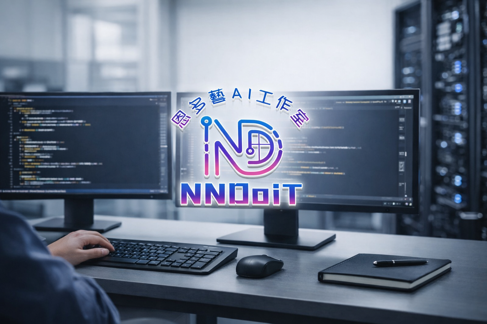

很多企業有大量重複的人工作業、散亂的資料流、或跨系統整合的痛點——卻不知道從哪裡開始。我做的事是：找出這些卡點，用 AI、自動化 與 系統整合 把它解掉，交出能真正上線、能維護、能擴充的東西。不是單純做個網站，不是單純做聊天機器人，而是把流程、資料、系統串成一整套能跑的解決方案。

不用先懂技術——把你遇到的問題告訴我。以下是我常幫客戶解決的六種真實情境。
每天要手動複製貼上、整理出貨單、彙整多份 Excel？讓系統自動抓取、格式化、定時輸出，把重複人工清零。
需要人工接聽、電話問貨況、回報進度？打造 LINE Bot 讓使用者自助查詢，即時推播通知，省去人工轉達。
進銷存在 ERP、訂單在 Excel、資料要人工比對同步？把各系統串起來，資料自動流通，不再靠人橋接。
合約、規格書、客服紀錄累積大量文件卻難以查找？用 AI 自動摘要、分類，讓員工直接問問題就得到答案。
沒有對外窗口、官網過時、潛在客戶找不到你？打造兼顧視覺與行動呼籲的商業網站，快速上線有效轉換。
業務流程靠人橋接、每個環節各自為政？重新設計資料流，讓觸發 → 處理 → 通知全部自動跑，人力聚焦在真正重要的事。
這些是我在解決「AI 落地、流程自動化、系統整合」三類問題時實際用到的工具——不是為了羅列而羅列，每項都有對應的實際落地經驗。
拖曳或滑動瀏覽所有專案，點擊查看完整 Case Study。
合作過的客戶怎麼說？以下是他們真實的回饋與使用心得。
每個數字背後都是真實交付的系統與解決的問題。
以下為參考報價區間，實際費用依需求功能與複雜度評估，確認需求後提供明確報價。沒有隱藏費用，報什麼就是什麼。
所有專案預設交付原始碼。若有特殊原因不含原始碼，會在報價前明確說明，不會事後才告知。
有保密需求的合作，可在簽約前討論並簽署 NDA。企業內部系統、商業邏輯等敏感資訊皆會妥善保護。
不確定需求？可以先做 MVP 驗證核心功能，確認方向後再擴充。大型專案也支援分階段開發，降低初期風險。
從第一次聯繫到系統交付，整個流程清楚透明。
小型專案約 1~2 週；中型系統 3~6 週；大型企業系統依需求另行評估。時程會在確認需求後一起討論，不會給你一個模糊的答案。
依功能數量、複雜度與預計時程評估，確認需求後提供明確報價區間，不會模糊報價讓你猜。若有預算上限，可以直接說，我幫你規劃在範圍內能做到什麼。
預設包含原始碼交付。我認為你付了錢，就應該拿到可以自己維護或交給別人維護的東西。若有特殊情況不含原始碼，會在報價前說清楚，不會事後才講。
可以。如果你的需求涉及商業邏輯、內部流程或敏感資料，我們可以在正式合作前簽署 NDA，確保你的資訊不會外流。
非常推薦這種方式，尤其是需求還不夠確定的時候。先用較低預算做出核心功能驗證方向，確認可行再追加後續功能，風險小、效率高。
可以，特別是中大型專案。我們會一起規劃里程碑，每個階段完成後確認再進入下一階段，不會一次燒完預算卻不確定方向對不對。
小幅調整（不影響架構）可以彈性處理，通常不額外收費。如果是方向性的改變或新增功能，我們會提前溝通，確認影響範圍再決定是否調整報價，不會讓你有意外帳單。
小型專案含 1 個月免費 Bug 修正；中型以上含 3 個月維護期。維護期內如果是我的問題造成的 Bug，免費處理。超出維護期或新增功能則另行討論費用。
採三段式付款：確認報價後付 30% 訂金開始開發 → Demo 完成付 40% → 驗收通過後付 30% 尾款並交付原始碼。不會要你先全額付清，風險雙方共擔。
當然。初步諮詢和需求評估完全免費，不會因為你問了問題就產生費用。加 LINE 聊聊你的狀況，我幫你判斷可不可行、大概要多少、哪種方式最適合。
完全可以。大多數專案都透過線上溝通（LINE / Meet / 文件）完成，地區不限。台灣各縣市、海外客戶都有成功合作過。
完全沒問題，也是最常見的情況。你只需要描述「現在遇到什麼問題、希望達到什麼結果」，技術的部分我來負責。需求討論全程用白話說明，不讓你被技術名詞搞混。
不用想太多，直接把需求丟給我。我幫你一起把架構跟做法整理出來。
分享 AI 自動化、系統整合與接案實戰的第一線觀點——不只是技術，更是解決真實問題的思考方式。
還不確定怎麼開始也沒關係，先把想解決的問題丟給我。不需要懂技術，我來幫你拆解。
不需要準備完整規格，把狀況說清楚就好——我來幫你評估並回覆。
有任何 AI、自動化、系統整合需求，歡迎直接聯絡。
目前有接案需求，一律透過官方 LINE 帳號聯繫哦～
可合作範圍包含 AI 系統開發、LLM / RAG 應用、文件與資料抽取、自動化流程設計、LINE Bot、Webhook / API 串接、前後端開發、ERP / 流程優化 與 企業系統整合。
不需要先準備好完整規格，把想解決的問題告訴我，我們一起討論可行方案。
💬 加 LINE 免費諮詢